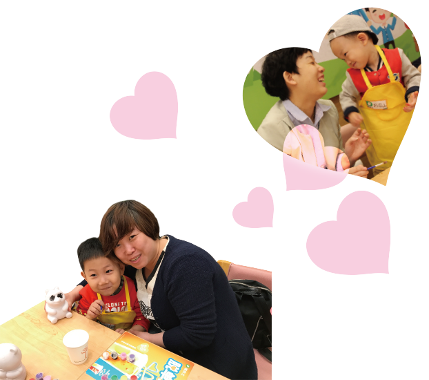

一辈子能拥有最珍贵的东西就是家庭和家人，东北子公司给了大家一个合家团聚的理由，举办以“妈妈的颜色”为主题的家庭日活动。此次活动反响颇为热烈，小朋友在活动中亲自制作母亲节礼物，妈妈们也见证了孩子的成长。一起来看看温馨感人的活动盛况吧！
德克士员工早早在店内布置好了温馨的场景，这一天他们化身朋友、老师和家人陪伴在场的每一组家庭，耐心指导小朋友们创作，共同参与每一项活动。他们当中有的已经为人母，但为了让更多母亲度过一个温情感动的节日，放弃自己庆祝的机会投身到家庭日中。
家庭日活动让妈妈们看到不一样的孩子，前一天还需要照顾的宝宝们瞬间变成小大人开始回报母亲。用想象力为妈妈的裙子填上颜色，亲手制作饱含爱意的汉堡，甚至亲自喂给妈妈吃。
